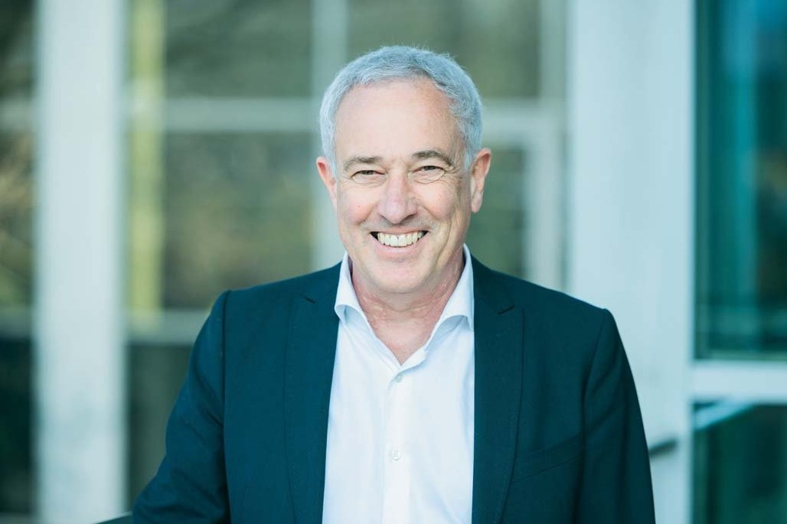
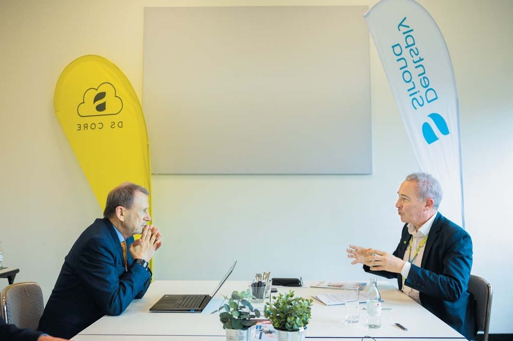
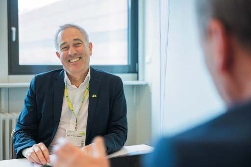
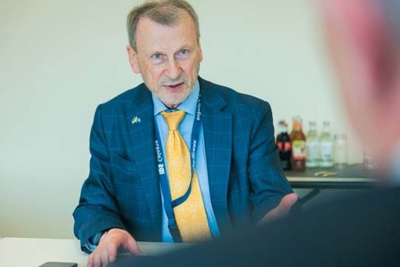
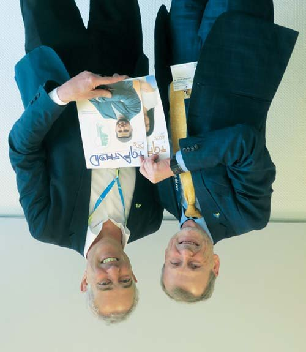

Майбутнє стоматології · журнал «ДентАрт» 2025 №2
Професор Райнер Зейманн: «Успішна стоматологія можлива лише за умови належного навчання новим технологіям»

Професор Райнер Зейманн, DMD, PhD (Dr. med. dent. habil.), MBA — віцепрезидент глобальних клінічних досліджень і виконувач обов'язків головного клінічного директора Dentsply Sirona, професор кафедри оперативної, профілактичної та дитячої стоматології Бернського університету, Швейцарія.
Про майбутнє стоматології
— Шановний професоре Зейманне, шановний Райнере, дякую за можливість зустрітися з Вами на Міжнародному стоматологічному шоу 2025 тут, у Кельні, і поговорити від імені журналу «ДентАрт» про нашу професію і роль у ній компанії Дентсплай Сірона як найбільшого у світі виробника матеріалів і обладнання для стоматологів! У Женеві професор Іво Крейчі заявив, що стоматологія у майбутньому має перетворитися на фітнес-стоматологію, а стоматолог має діяти як тренер… Чимало моїх колег поставилися до цього прогнозу скептично, як і до думки, що в майбутньому не стане карієсу зубів, принаймні як масового захворювання… Що Ви думаєте про такі прогнози і яким бачите майбутнє глобального стоматологічного здоров'я і роль у ньому Дентсплай Сірона?
— Так, Ви згадали цю цитату відомого стоматолога, що стоматологія майбутнього може бути подібною до фітнесу. Певною мірою я згоден, але якщо говорити про загальну картину в усьому світі, то з цим твердженням не можна погодитися повністю…
Отже, в чому я згоден? Я погоджуюся, якщо мова йде про такі країни, як Швейцарія чи Німеччина, де система охорони здоров'я на високому рівні, де ми бачимо, що розповсюдженість карієсу зубів стає все меншою, і де через це багато стоматологів перейшли працювати у сферу косметичної стоматології.
Але все ж я вважаю, що в усьому світі є дуже багато проблем зі здоров'ям ротової порожнини, і населенню потрібні реставраційна стоматологія, ендодонтія, нам потрібні всі дисципліни стоматології, відомі на сьогодні, і також потрібні дуже гарні гігієністи. Тому коли Ви говорите про майбутнє, я не бачу цих лікарів у ролі фітнес-тренерів, які лише спілкуються і мотивують. Все ж таки пацієнтам потрібне стоматологічне лікування у кваліфікованих стоматологів із вищою освітою — це зовсім інша річ!
Я пишаюся тим, що працюю в головному клінічному офісі компанії Dentsply Sirona, чия місія та бачення полягають у тому, щоб якісним та надійним стоматологічним лікуванням займалися досвідчені стоматологи. Отже, я не сприймаю стоматологів як просто тренерів, їхня роль набагато більша. Це стосується і зв'язку здоров'я ротової порожнини із загальним станом здоров'я. Тож у нас, стоматологів, значно важливіша роль, ніж просто тренерів. Сподіваюся, Ви згодні з цим...
І я маю на увазі, що коли ми говоримо про дітей, то ми як стоматологи можемо багато зробити, щоб підтримувати їхнє здоров'я на належному рівні, і тут я повністю згоден з вами.
Але проблема полягає в іншому… Наприклад, якщо ми поглянемо на статистику карієсу в Німеччині, то поширеність і інтенсивність карієсу зменшується, у нас є великий відсоток дітей, які більше не мають проблем з карієсом. Проте у нас є група високого ризику карієсу, зазвичай це населення з низьким рівнем освіти, а також люди, яких ми приймаємо з різних країн у статусі біженців… Так склалося, що карієс у Німеччині став хворобою бідних людей, і тому я думаю, що для цих груп населення ми можемо особливо багато зробити за допомогою освітніх програм, програм охорони здоров'я тощо.

Про дитячу стоматологію
— Фундамент майбутнього стоматологічного здоров'я закладається в ранньому дитинстві, а Ви тривалий час очолювали департамент оперативної, профілактичної і дитячої стоматології в Університеті Берна, в цьому напрямку зосереджені Ваші наукові інтереси, і зараз, працюючи в Дентсплай Сірона, Ви залишаєтесь професором цього департаменту… Чи можливо повністю позбавити всіх дітей у всьому світі від стоматологічних захворювань? Хоча стоматологи, мабуть, мало можуть вплинути на появу вроджених щілин губи і піднебіння…
— Теоретично «так», і я думаю, що ми це зробили...
Коли я вивчав стоматологію, у Німеччині були дуже високі показники карієсу зубів у 10–12-річних дітей, і тоді було розпочато багато профілактичних програм... Ці програми зробили багато дуже хороших речей, і зараз ми маємо досить гарні результати за статистикою порівняно з іншими країнами. Тож я вважаю, що ми можемо багато чого зробити з програмами громадського здоров'я, але, на жаль, ця група все ще складається лише з дітей із сімей з добрим достатком.
Профілактика стосується не лише дітей... Якогось часу ми старіємо, і у людей похилого віку починається занепад здоров'я. У цих людей також є зуби, але мешканці будинків людей похилого віку не відвідують стоматолога. Тому я вважаю, що профілактика, яка стосується стоматологічного здоров'я людей похилого віку, є також дуже важливою темою.
Дякую, що нагадали мені про усунення щілин губи і піднебіння… Я насправді дуже пишаюся тим, що ми в компанії Дентсплай Сірона беремо участь у багатьох стоматологічних програмах, серед яких є дві мої улюблені.
Smile Train — це програма, у якій ми жертвуємо кошти для оперативного усунення вроджених щілин губи і піднебіння. Ми спонсорували близько 4000 таких реконструктивних операцій дітям у всьому світі, і я мав нагоду відвідати один із таких центрів міжнародної благодійної організації Smile Train у Колумбії...
Друга програма називається 32, і я великий шанувальник цього проєкту, який ми реалізуємо в Амазонії. У цій програмі є група стоматологів-волонтерів, які подорожують на човнах Амазонкою. Стоматологи проводять стоматологічне лікування зубів місцевому населенню, у них є установка CEREC, тож вони виготовляють і встановлюють коронки людям, які не можуть дістатися стоматолога, повертаючи їм тим самим гідність і усмішку. Це карколомна програма, яку ми спонсоруємо вже кілька років...
Наше бачення і мета полягають у тому, щоб забезпечити 25 мільйонів усмішок, і це справді фантастична робота! Отже, так, ми значною мірою залучені до того, щоб робити добрі справи, але я б сказав, що є ще багато чим зайнятися!
Про перспективи технологій, матеріалів і обладнання в сучасному цифровому світі
— Краще майбутнє вимагає зусиль усього людства, всіх стоматологів! Проте сучасний стан стоматологічного здоров'я людей все ще обтяжений проблемами, починаючи від повної адентії… Як компанія Дентсплай Сірона, найбільший у світі виробник у галузі стоматології, відповідає на сучасні виклики своїми традиціями та інноваціями задля глобального стоматологічного здоров'я?
— Я почав вивчати стоматологію в 1985 році, і вважаю, що ми тільки входимо в нову стоматологію, тому я б сказав, що сучасна стоматологія, можливо, почалася тоді, коли відкрився перший університет, оскільки саме тоді були розроблені такі технології, як пломбування амальгамою, ендодонтичне лікування...
Цифрова стоматологія з'явилася з CEREC та іншими можливостями, такими як цифрова рентгенографія та інше, і тепер ми, як ми це називаємо, увійшли у сферу поєднаної стоматології. Поєднана стоматологія означає, що ми не просто робимо цифрові речі, але об'єднуємо дані, які отримали від пацієнта і на основі яких здатні планувати лікування, застосовуючи штучний інтелект.
Усе це є насправді, і я бачу майбутнє в тому, щоб долучитися до поєднаної стоматології, зробити речі ефективнішими і дати можливість стоматологам зробити більше, а також допомогти стоматологам зробити те, на що вони раніше не наважувалися. Тож спростіть процес, використовуючи цифрові інструменти!


Дентсплай Сірона у комунікації стоматологів
— Перший об'єднувач стоматологів, доктор П'єр Фошар не мав уявлення про FDI, IDS, численні асоціації стоматологів для комунікації… Тепер у щоденній практиці стоматологів об'єднує цифрова комунікація, поширюючи кращий досвід і колегіальну допомогу. Яка роль Цифрового ядра, яке ми бачили на стенді Дентсплай Сірона, у комунікації стоматологів і клінік?
— Я вважаю, що комунікація є частиною ідеї об'єднання стоматології і стоматологів. Не знаю, чи у вашій країні є можливість переглянути всі інструменти нашої централізованої системи DS CORE, але з нашою глобальною цифровою платформою можуть співпрацювати стоматологічні клініки і стоматологи по всьому світу. Це дозволяє проводити обмін інформацією стоматологам різних клінік у різних країнах на різних континентах, і ви можете розмістити дані зі всього свого діагностичного обладнання в одному хмарному місці! І тоді всі дані мають такий самий вигляд, як ми бачимо в наших програмних системах у клініці, де ми можемо працювати над ними, документувати, ділитися інформацією з колегами…
Тож саме тут я бачу значну частину комунікації в стоматології!
Дентсплай Сірона в освіті стоматологів
— Щоб сучасний лікар був умілим, його треба не тільки навчати до диплома, але й вчити постійно до самої пенсії. Як Дентсплай Сірона співпрацює з університетами у професійній освіті стоматологів і з навчальними центрами у післядипломному безперервному навчанні?
— Я щиро вірю, що успішна стоматологія можлива лише за умови належного навчання новим технологіям. Ви повинні навчати новим технологіям стоматологів, а також студентів на ранній стадії навчання, проте, на жаль, деякі університети можуть не мати фундаменту, у них немає коштів, щоб інвестувати в цифрові технології і так далі… Тому це робимо ми, допомагаючи університетам у професійній стоматологічній освіті.
Передусім у нас є понад 50 академій для стоматологів по всьому світу, в яких ми проводимо післядипломне навчання. Лише минулого року ми організували близько 12 тисяч курсів по всьому світу, в яких взяли участь понад 200 тисяч стоматологів.
Ми проводимо всесвітні форуми Дентсплай Сірона, де надаємо можливість стоматологам почути виступи ключових лідерів стоматології, відомих на весь світ!
Я пам'ятаю ваш конкурс реставрацій, досить відомий конкурс прямих реставрацій з України. Я ніколи не бачив, щоб хтось ще так захоплювався цим… Те, що ви робили в Україні, — це був конкурс наживо, пацієнта лікували на місці, а не надсилали фотографії клінічного випадку.
— Клінічний конкурс в Україні проводився під назвою Призма-чемпіонат...
— Отже, чудово, ми теж зараз проводимо клінічний конкурс для студентів та молодих лікарів і називаємо його Глобальним конкурсом клінічних випадків — Global Clinical Case Contest (GCCC), таким чином ми впроваджуємо сучасні технології в стоматологічну школу і даємо студентам можливість вивчати сучасну техніку реставрації.
Є й інший конкурс, який називається Student Competition for Advancing Dental Research and its Application (SCADA), це конкурс студентських досліджень, який ми проводимо по всьому світу, але особливо широко у Сполучених Штатах. Студенти-стоматологи діляться результатами своїх досліджень і можуть отримати призи за свою наукову активність. Ми займаємося також дослідженням штучного інтелекту, і я вважаю, що це надзвичайно важливо.
— Дякую за Ваші відповіді, шановний Райнере! Що б Ви хотіли побажати стоматологам України?
— Бажаю українським стоматологам залишатися в стоматології і дбати про пацієнтів. Зичу вам подальших успіхів, щоб добре лікували всіх своїх пацієнтів навіть у ці важкі для України часи!

Переклали з англійської Анна і Юлія Бодаква.